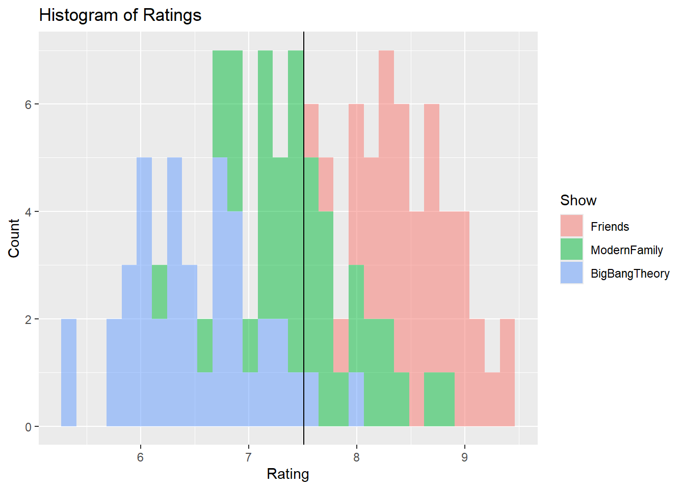
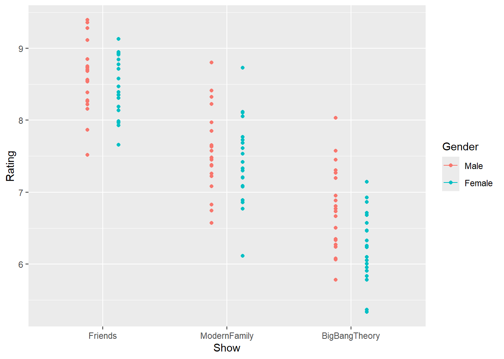
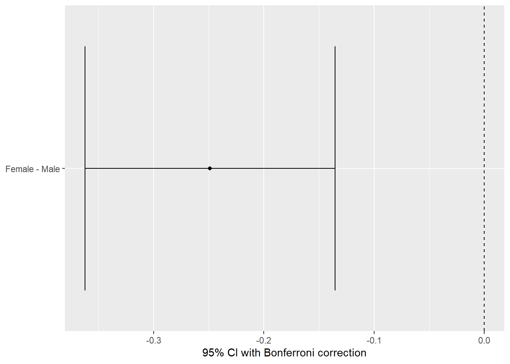
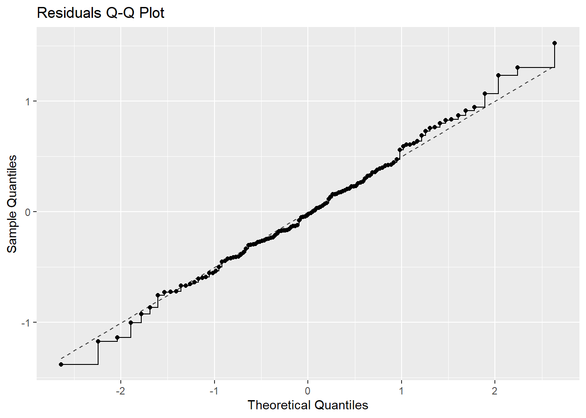

── Attaching core tidyverse packages ──────────────────────── tidyverse 2.0.0 ──
✔ dplyr 1.1.4 ✔ readr 2.1.5
✔ forcats 1.0.0 ✔ stringr 1.5.2
✔ ggplot2 4.0.0 ✔ tibble 3.3.0
✔ lubridate 1.9.4 ✔ tidyr 1.3.1
✔ purrr 1.1.0
── Conflicts ────────────────────────────────────────── tidyverse_conflicts() ──
✖ dplyr::filter() masks stats::filter()
✖ dplyr::lag() masks stats::lag()
ℹ Use the conflicted package (<http://conflicted.r-lib.org/>) to force all conflicts to become errors
library(ggformula)
Loading required package: scales
Attaching package: 'scales'
The following object is masked from 'package:purrr':
discard
The following object is masked from 'package:readr':
col_factor
Loading required package: ggridges
New to ggformula? Try the tutorials:
learnr::run_tutorial("introduction", package = "ggformula")
learnr::run_tutorial("refining", package = "ggformula")
library(mosaic)
Registered S3 method overwritten by 'mosaic':
method from
fortify.SpatialPolygonsDataFrame ggplot2
The 'mosaic' package masks several functions from core packages in order to add
additional features. The original behavior of these functions should not be affected by this.
Attaching package: 'mosaic'
The following object is masked from 'package:Matrix':
mean
The following object is masked from 'package:scales':
rescale
The following objects are masked from 'package:dplyr':
count, do, tally
The following object is masked from 'package:purrr':
cross
The following object is masked from 'package:ggplot2':
stat
The following objects are masked from 'package:stats':
binom.test, cor, cor.test, cov, fivenum, IQR, median, prop.test,
quantile, sd, t.test, var
The following objects are masked from 'package:base':
max, mean, min, prod, range, sample, sum
library(broom)library(infer)
Attaching package: 'infer'
The following objects are masked from 'package:mosaic':
prop_test, t_test
library(supernova)
Attaching package: 'supernova'
The following object is masked from 'package:scales':
number
library(ggstatsplot)
You can cite this package as:
Patil, I. (2021). Visualizations with statistical details: The 'ggstatsplot' approach.
Journal of Open Source Software, 6(61), 3167, doi:10.21105/joss.03167
# A tibble: 120 × 4
ID Gender Show Rating
<int> <fct> <fct> <dbl>
1 1 Male Friends 8.22
2 2 Male Friends 8.38
3 3 Male Friends 9.28
4 4 Male Friends 8.54
5 5 Male Friends 8.56
6 6 Male Friends 9.36
7 7 Male Friends 8.73
8 8 Male Friends 7.87
9 9 Male Friends 8.16
10 10 Male Friends 8.28
# ℹ 110 more rows
Visualising Data
gf_jitter(Rating ~ Show, color =~Show, width =0.2, data = ratings_long, size =3, alpha =0.5) %>%gf_labs(title ="Opinion Scores by Show", x ="Show", y ="Rating") %>%gf_hline(yintercept =~mean(Rating), color ="grey") %>%gf_annotate(geom ="text", label ="Overall Mean", x =3, y =mean(ratings_long$Rating) +0.2, size =4)
Inference
The raw data clearly shows Friends having the highest ratings, followed by ModernFamily, and then BigBangTheory. The overall mean rating (grey line) falls roughly between the ModernFamily and BigBangTheory groups. The groups appear separated, suggesting a strong effect.
gf_histogram(~Rating, fill =~Show, data = ratings_long, alpha =0.5) %>%gf_vline(xintercept =~mean(ratings_long$Rating)) %>%gf_labs(title ="Histogram of Ratings", x ="Rating", y ="Count")
Warning: Use of `ratings_long$Rating` is discouraged.
ℹ Use `Rating` instead.
`stat_bin()` using `bins = 30`. Pick better value `binwidth`.

Inference
Confirms the means are different and shows the distribution of scores. - Friends ratings are higher (peaked around 8-9), - ModernFamily is mid-range (peaked around 7-8), - BigBangTheory is lowest (peaked around 6-7). The black vertical line is the overall mean.
gf_point(Rating ~ Show, color =~Gender, data = ratings_long, position =position_dodge(width =0.5)) %>%gf_line(Rating ~ Show, color =~Gender, data = ratings_long, stat ="summary", fun.y ="mean", position =position_dodge(width =0.5))
No summary function supplied, defaulting to `mean_se()`
`geom_line()`: Each group consists of only one observation.
ℹ Do you need to adjust the group aesthetic?

ANOVA Test
ratings_anova <-aov(Rating ~ Show, data = ratings_long)summary(ratings_anova)
Df Sum Sq Mean Sq F value Pr(>F)
Show 2 81.38 40.69 138.4 <2e-16 ***
Residuals 117 34.41 0.29
---
Signif. codes: 0 '***' 0.001 '**' 0.01 '*' 0.05 '.' 0.1 ' ' 1
supernova::supernova(ratings_anova)
Analysis of Variance Table (Type III SS)
Model: Rating ~ Show
SS df MS F PRE p
----- --------------- | ------- --- ------ ------- ----- -----
Model (error reduced) | 81.382 2 40.691 138.371 .7029 .0000
Error (from model) | 34.406 117 0.294
----- --------------- | ------- --- ------ ------- ----- -----
Total (empty model) | 115.788 119 0.973
ratings_anova <-aov(Rating ~ Show, data = ratings_long)ratings_anova
Call:
aov(formula = Rating ~ Show, data = ratings_long)
Terms:
Show Residuals
Sum of Squares 81.38189 34.40635
Deg. of Freedom 2 117
Residual standard error: 0.5422835
Estimated effects may be unbalanced
Inference
Null Hypothesis Rejected: We confidently rejected the idea that all three shows have the same true average rating.
Alternative Hypothesis Supported: This means we accept the alternative hypothesis, concluding that there is a significant difference in the mean ratings among the TV shows.
ratings_anova_1 <-aov(Rating ~ Show + Gender, data = ratings_long)summary(ratings_anova)
Df Sum Sq Mean Sq F value Pr(>F)
Show 2 81.38 40.69 138.4 <2e-16 ***
Residuals 117 34.41 0.29
---
Signif. codes: 0 '***' 0.001 '**' 0.01 '*' 0.05 '.' 0.1 ' ' 1
supernova::supernova(ratings_anova_1)
Analysis of Variance Table (Type III SS)
Model: Rating ~ Show + Gender
SS df MS F PRE p
------ --------------- | ------- --- ------ ------- ----- -----
Model (error reduced) | 83.239 3 27.746 98.883 .7189 .0000
Show | 81.382 2 40.691 145.016 .7143 .0000
Gender | 1.857 1 1.857 6.618 .0540 .0114
Error (from model) | 32.549 116 0.281
------ --------------- | ------- --- ------ ------- ----- -----
Total (empty model) | 115.788 119 0.973
Inference
Mean ratings of the shows are significantly different AND ratings given by different genders are also significantly different.
ratings_supernova <- supernova::pairwise(ratings_anova_1,correction ="Bonferroni", # Try "Tukey"alpha =0.05, # 95% CI calculationvar_equal =TRUE, # We'll seeplot = T )

Inferemce
Friends > Mordern Family > Big Bang Theory
Males gave a higher average rating than Females did (By abt quater point).
# A tibble: 3 × 4
# Groups: Show [3]
Show statistic p.value method
<fct> <dbl> <dbl> <chr>
1 Friends 0.989 0.953 Shapiro-Wilk normality test
2 ModernFamily 0.988 0.940 Shapiro-Wilk normality test
3 BigBangTheory 0.987 0.913 Shapiro-Wilk normality test
ratings_anova$residuals %>%as_tibble() %>%gf_dhistogram(~value, data = .) %>%gf_labs(title ="Residuals Histogram",x ="Residuals", y ="Count" ) %>%gf_fitdistr()
`stat_bin()` using `bins = 30`. Pick better value `binwidth`.
ratings_anova$residuals %>%as_tibble() %>%gf_qq(~value, data = .) %>%gf_qqstep() %>%gf_labs(title ="Residuals Q-Q Plot",x ="Theoretical Quantiles", y ="Sample Quantiles" ) %>%gf_qqline()

Inference
The residuals generally follow the normal curve, suggesting the normality assumption for the errors is reasonably met, despite some bin irregularities. This supports the validity of the ANOVA test.
Most of the data points fall close to the dashed straight line, especially in the center, indicating that the residuals are approximately normally distributed, supporting the ANOVA assumption. Deviations at the tails are common with real-world data but do not severely violate the assumption here.
`summarise()` has grouped output by 'Show'. You can override using the
`.groups` argument.
# A tibble: 6 × 3
# Groups: Show [3]
Show Gender variance
<fct> <fct> <dbl>
1 Friends Male 0.237
2 Friends Female 0.172
3 ModernFamily Male 0.330
4 ModernFamily Female 0.341
5 BigBangTheory Male 0.337
6 BigBangTheory Female 0.241
DescTools::LeveneTest(Rating ~ Show, data = ratings_long)
Levene's Test for Homogeneity of Variance (center = median)
Df F value Pr(>F)
group 2 1.0965 0.3375
117
While the average rating is very different, the level of agreement or disagreement among the people rating Friends is the same as for ModernFamily and BigBangTheory. They are equally consistent in how tightly their ratings cluster around the mean for that specific show.
fligner.test(Rating ~ Show, data = ratings_long)
Fligner-Killeen test of homogeneity of variances
data: Rating by Show
Fligner-Killeen:med chi-squared = 2.1645, df = 2, p-value = 0.3388
ggstatsplot::ggbetweenstats(data = ratings_long,x = Show,y = Rating,colour = Show,alpha =0.8,type ="parametric",p.adjust.method ="bonferroni",conf.level =0.95,violin.args =list(width =0.0) # Removes violin plots like in frogs example) +scale_colour_paletteer_d("ggthemes::colorblind") +labs(title ="ANOVA: Ratings by TV Show",x ="TV Show",y ="Rating",subtitle ="",caption ="" )
Scale for colour is already present.
Adding another scale for colour, which will replace the existing scale.
Inference
This plot visually summarizes the means and spread. The pairwise values for all three comparisons are all highly significant. This confirms that the mean rating of every show is statistically different from every other show.
Conclusion
Friends is the Clear Winner (8.52$)
ModernFamily is the Mid-Performer (7.49)
BigBangTheory is the Lowest Rated (6.50)
Friends vs. The Others: On a rating scale, Friends is rated significantly higher than both and is approximately 1 point higher than ModernFamily and 2 points higher than BigBangTheory. ModernFamily vs. BigBangTheory: ModernFamily is similarly rated significantly better than BigBangTheory, with a difference of about 1 point.